Urban Institute R Graphics Guide
R is a powerful, open-source programming language and environment. R excels at data management and munging, traditional statistical analysis, machine learning, and reproducible research, but it is probably best known for its graphics. This guide contains examples and instructions for popular and lesser-known plotting techniques in R. It also includes instructions for using urbnthemes, the Urban Institute’s R package for creating near-publication-ready plots with ggplot2. If you have any questions, please don’t hesitate to contact Aaron Williams (awilliams@urban.org) or Kyle Ueyama (kueyama@urban.org).
Background
library(urbnthemes) makes ggplot2 output align more closely with the Urban Institute’s Data Visualization style guide. This package does not produce publication ready graphics. Visual styles must still be edited using your project/paper’s normal editing workflow.
Exporting charts as a pdf will allow them to be more easily edited. You may need to tweak pdf export options to preserve fonts. For example, in RStudio on OSX, check this option in the export pdf window: 
The theme has been tested against ggplot2 version 3.0.0. It will not function properly with older versions of ggplot2
Using library(urbnthemes)
Run the following code to install or update urbnthemes:
install.packages("devtools")
devtools::install_github("UI-Research/urbnthemes")Run the following code at the top of each script:
library(tidyverse)
library(urbnthemes)
set_urbn_defaults(style = "print")If it is not already installed, please install the free Lato font from Google fonts. If you’re on Windows, you’ll first need to install Ghostscript. You may need to have IT enter an admin password for this installation. Then, in R, tell R where your ghostscript file is. Edit the file path if yours is in a different place
Sys.setenv(R_GSCMD="C:/Program Files/gs/gs9.05/bin/gswin32c.exe")Run this script once to import and register Lato:
install.packages(c("ggplot2", "ggrepel", "extrafont"))
urbnthemes::lato_install()Loading and importing fonts may take a few minutes.
Grammar of Graphics and Conventions
Hadley Wickham’s ggplot2 is based on Leland Wilkinson’s The Grammar of Graphics and Wickham’s A Layered Grammar of Graphics. The layered grammar of graphics is a structured way of thinking about the components of a plot, which then lend themselves to the simple structure of ggplot2.
- Data are what are visualizaed in a plot and mappings are directions for how data are mapped in a plot in a way that can be perceived by humans.
- Geoms are representations of the actual data like points, lines, and bars.
- Stats are statistical transformations that represent summaries of the data like histograms.
- Scales map values in the data space to values in the aesthetic space. Scales draw legends and axes.
- Coordinate Systems describe how geoms are mapped to the plane of the graphic.
- Facets break the data into meaningful subsets like small multiples.
- Themes control the finer points of a plot such as fonts, font sizes, and background colors.
More information: ggplot2: Elegant Graphics for Data Analysis
Tips and Tricks
ggplot2expects data to be in data frames or tibbles. It is preferable for the data frames to be “tidy” with each variable as a column, each obseravtion as a row, and each observational unit as a separate table.dplyrandtidyrcontain concise and effective tools for “tidying” data.R allows function arguments to be called explicitly by name and implicitly by position. The coding examples in this guide only contain named arguments for clarity.
Continuous legends should be switched to vertical using
theme(legend.direction = "vertical").Graphics will sometimes render differently on different operating systems. This is because anti-aliasing is activated in R on Mac and Linux but not activated in R on Windows. This won’t be an issue once graphics are saved.
Most features of plots can be adjusted by adding
theme()to the end of a ggplot call. For example, a plot with a continuous legend would look like this:Continuous x-axes have ticks. Discrete x-axes do not have ticks. Use
remove_ticks()to remove ticks.
Bar Plots
One Color
ggplot(data = mtcars, mapping = aes(factor(cyl))) +
geom_bar() +
scale_y_continuous(expand = expand_scale(mult = c(0, 0.1))) +
labs(title = "Number of Cars By Number of Cylinders",
x = "Number of Cylinders",
y = "Count") +
remove_ticks()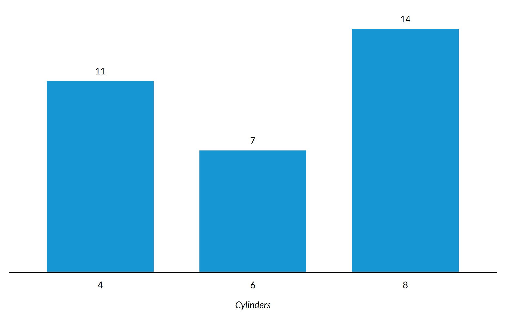
Three Colors
This is identical to the previous plot except colors and a legend are added with fill = factor(cyl). Turning x into a factor with factor(cyl) skips 5 and 7 on the x-axis. Adding fill = cyl without factor() would have created a continuous color scheme and legend.
ggplot(data = mtcars, mapping = aes(x = factor(cyl), fill = factor(cyl))) +
geom_bar() +
scale_y_continuous(expand = expand_scale(mult = c(0, 0.1))) +
labs(title = "Number of Cars By Number of Cylinders",
x = "Number of Cylinders",
y = "Count") +
remove_ticks()
Stacked Bar Plot
An additional aesthetic can easily be added to bar plots by adding fill = categorical variable to the mapping. Here, diamond quality subsets each bar showing the count of diamonds with each level of clarity.
ggplot(data = diamonds, mapping = aes(x = clarity, fill = cut)) +
geom_bar() +
scale_y_continuous(expand = expand_scale(mult = c(0, 0.1)), labels = scales::comma) +
labs(title = "Diamond Clarity",
subtitle = "Something Informative About Diamonds",
x = "Clarity",
y = "Count") +
remove_ticks()
Stacked Bar Plot With Position = Fill
position = "fill" in geom_bar() changes the y-axis from count to the proportion of each bar.
ggplot(data = diamonds, mapping = aes(x = clarity, fill = cut)) +
geom_bar(position = "fill") +
scale_y_continuous(expand = expand_scale(mult = c(0, 0.1)), labels = scales::percent) +
labs(title = "Better Cut Diamonds have Better Clarity",
subtitle = "Share of Diamonds with Different Qualities by Clarity of Cut",
x = "Clarity",
y = "Count") +
remove_ticks()
Dodged Bar Plot
Subsetted bar charts in ggplot2 are stacked by default. position = "dodge" in geom_bar() expands the bar chart so the bars appear next to each other.
ggplot(data = diamonds, mapping = aes(clarity, fill = cut)) +
geom_bar(position = "dodge") +
scale_y_continuous(expand = expand_scale(mult = c(0, 0.1)), labels = scales::comma) +
labs(title = "Diamond Clarity",
subtitle = "Something Informative About Diamonds",
x = "Clarity",
y = "Count") +
remove_ticks()
Lollipop plot/Cleveland dot plot
Lollipop plots and Cleveland dot plots are minimalist alternatives to bar plots. The key to both plots is to order the data based on the continuous variable using arrange() and then turn the discrete variable into a factor with the ordered levels of the continuous variable using mutate(). This step “stores” the order of the data.
Lollipop plot
mtcars %>%
rownames_to_column("model") %>%
arrange(mpg) %>%
mutate(model = factor(model, levels = .$model)) %>%
ggplot(aes(mpg, model)) +
geom_segment(aes(x = 0, xend = mpg, y = model, yend = model)) +
geom_point() +
scale_x_continuous(expand = c(0, 0), limits = c(0, max(mtcars$mpg) * 1.1)) +
labs(title = "Miles Per Gallon of Popular Cars",
subtitle = "1974 Motor Trend US magazine",
x = NULL,
y = "Miles Per Gallon") +
theme(axis.text.y = element_text(size = 8))
Cleveland dot plot
mtcars %>%
rownames_to_column("model") %>%
arrange(mpg) %>%
mutate(model = factor(model, levels = .$model)) %>%
ggplot(aes(mpg, model)) +
geom_point() +
scale_x_continuous(expand = c(0, 0), limits = c(0, max(mtcars$mpg) * 1.1)) +
labs(title = "Miles Per Gallon of Popular Cars",
subtitle = "1974 Motor Trend US magazine",
x = NULL,
y = "Miles Per Gallon") +
theme(axis.text.y = element_text(size = 8))
Dumbell plot
Scatter Plots
One Color Scatter Plot
Scatter plots are useful for showing relationships between two or more variables.
ggplot(data = diamonds, mapping = aes(x = carat, y = price)) +
geom_point() +
scale_y_continuous(expand = expand_scale(mult = c(0, 0.1)), labels = scales::dollar) +
labs(title = "Diamond Prices Increase With Size",
subtitle = "Diamond Prices in Dollars and Sizes in Carats",
x = "Carat",
y = "Price")
High-Density Scatter Plot with Transparency
Large numbers of observations can sometimes make scatter plots tough to interpret because points overlap. Adding alpha = with a number between 0 and 1 adds transparency to points and clarity to plots. Now it’s easy to see that jewelry stores are probably rounding up but not rounding down carats!
ggplot(data = diamonds, mapping = aes(x = carat, y = price)) +
geom_point(alpha = 0.05) +
scale_y_continuous(expand = expand_scale(mult = c(0, 0.1)), labels = scales::dollar) +
labs(title = "Diamond Prices Increase With Size",
subtitle = "Diamond Prices in Dollars and Sizes in Carats",
x = "Carat",
y = "Price")
Hex Scatter Plot
Sometimes transparency isn’t enough to bring clarity to a scatter plot with many observations. As n increases into the hundreds of thousands and even millions, geom_hex can be one of the best ways to display relationships between two variables.
ggplot(data = diamonds, mapping = aes(x = carat, y = price)) +
geom_hex(mapping = aes(fill = ..count..)) +
scale_y_continuous(expand = expand_scale(mult = c(0, 0.1)), labels = scales::dollar) +
scale_fill_gradientn(labels = scales::comma) +
labs(title = "Title",
subtitle = "geom_hex adds clarity to overlapping points",
x = "Carat",
y = "Price") +
theme(legend.position = "right",
legend.direction = "vertical")
Scatter Plots With Random Noise
Sometimes scatter plots have many overlapping points but a reasonable number of observations. geom_jitter adds a small amount of random noise so points are less likely to overlap. width and height control the amount of noise that is added. In the following before-and-after, notice how many more points are visible after adding jitter.
Before
ggplot(data = mpg, mapping = aes(x = displ, y = cty)) +
geom_point() +
scale_y_continuous(expand = c(0, 0), limits = c(0, 40)) +
labs(title = "Displacement and City MPG",
subtitle = "Cars With Less Displacement Generally Get Better City MPG",
x = "Displacement",
y = "City MPG")
After
set.seed(2017)
ggplot(data = mpg, mapping = aes(x = displ, y = cty)) +
geom_jitter(width = 0.2, height = 0.2) +
scale_y_continuous(expand = c(0, 0), limits = c(0, 40)) +
labs(title = "Displacement and City MPG",
subtitle = "Cars With Less Displacement Generally Get Better City MPG",
x = "Displacement",
y = "City MPG")
Scatter Plot with Counts
Another option is to use geom_count() to add a size dimension to overlapping points.
ggplot(data = mpg, mapping = aes(x = displ, y = cty)) +
geom_count() +
scale_y_continuous(expand = c(0, 0), limits = c(0, 40)) +
labs(title = "Displacement and City MPG",
subtitle = "Cars With Less Displacement Generally Get Better City MPG",
x = "Displacement",
y = "City MPG")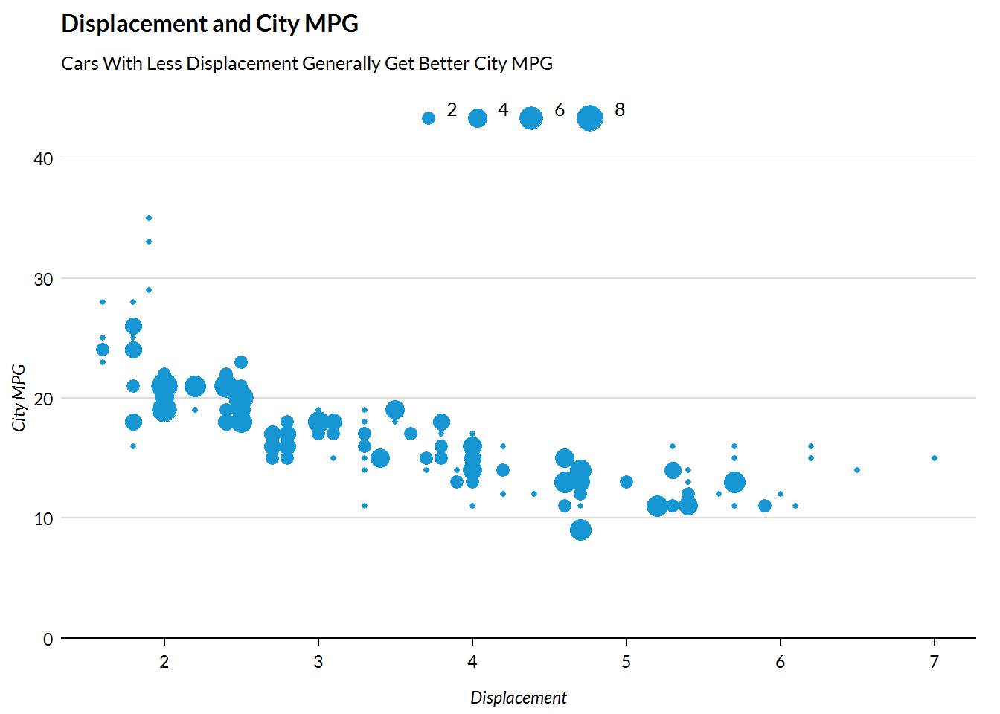
Scatter Plots with Fill
A third aesthetic can be added to scatter plots. Here, color signifies the number of cylinders in each car. Before ggplot() is called, Cylinders is created using library(dplyr) and the piping operator %>%.
mtcars %>%
mutate(Cylinders = factor(cyl)) %>%
ggplot(mapping = aes(x = wt, y = mpg, colour = Cylinders)) +
geom_point(size = 3) +
scale_y_continuous(expand = c(0, 0), limits = c(0, 40)) +
labs(title = "Fuel Efficiency Declines as Weight Increases",
x = "Weight (Tons)",
y = "Miles Per Gallon") +
theme(legend.title = element_text(hjust = 0))
Bubble Scatter Plot
size = can be used as a mapping to plot a fourth dimension.
mtcars %>%
mutate(Cylinders = factor(cyl), `Automatic Transmission` = factor(am)) %>%
ggplot(mapping = aes(x = wt, y = mpg, color = `Automatic Transmission`, size = Cylinders)) +
geom_point() +
scale_y_continuous(expand = c(0, 0), limits = c(0, 40)) +
labs(title = "Fuel Efficiency Declines as Weight Increases",
x = "Weight (Tons)",
y = "Miles Per Gallon") +
theme(legend.title = element_text(hjust = 0))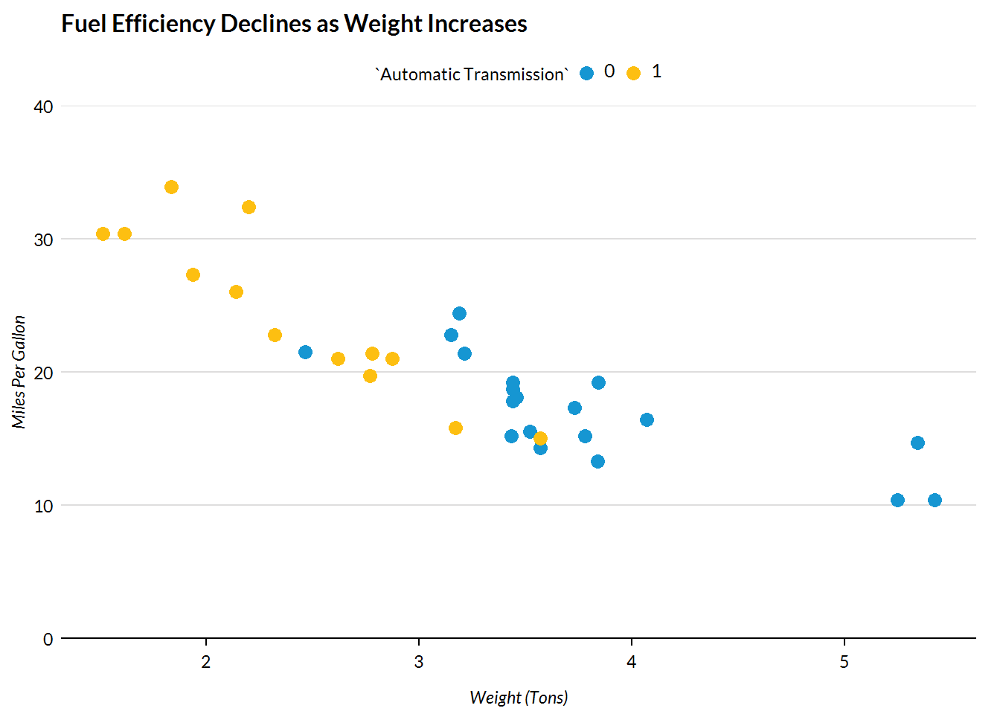
Line Plots
ggplot(data = economics, mapping = aes(x = date, y = unemploy)) +
geom_line() +
scale_y_continuous(expand = c(0, 0), limits = c(0, 16000), labels = scales::comma) +
labs(title = "Unemployment in the United States",
subtitle = "Number of Unemployed Americans in the U.S.",
x = "Year",
y = "Number Unemployed (1,000s)")
Lines Plots With Multiple Lines
library(tidyverse)
library(gapminder)
gapminder %>%
filter(country %in% c("Australia", "Canada", "New Zealand", "Japan")) %>%
ggplot(aes(year, gdpPercap, color = country)) +
geom_line() +
scale_x_continuous(expand = c(0, 0), breaks = c(1950, 1960, 1970, 1980, 1990, 2000, 2010), limits = c(1945, 2011)) +
scale_y_continuous(expand = c(0, 0), labels = scales::dollar, limits = c(0, 40000)) +
labs(title = "Per Capita GDP in Selected Countries",
subtitle = "From the gapminder data set",
x = "Year",
y = "Per capita GDP")
Plotting more than one variable can be useful for seeing the relationship of variables over time, but it takes a small amount of data munging.
This is because ggplot2 wants data in a “long” format instead of a “wide” format for line plots with multiple lines. gather() and spread() from the tidyr package make switching back-and-forth between “long” and “wide” painless. Essentially, variable titles go into “key” and variable values go into “value”. Then ggplot2, turns the different levels of the key variable (population, unemployment) into colors.
library(tidyverse)
as_tibble(EuStockMarkets) %>%
mutate(date = time(EuStockMarkets)) %>%
gather(key = "key", value = "value", -date) %>%
ggplot(aes(date, value, color = key)) +
geom_line() +
scale_x_continuous(expand = c(0, 0), limits = c(1991, 1999.5), breaks = c(1991, 1993, 1995, 1997, 1999)) +
scale_y_continuous(expand = c(0, 0),
labels = scales::dollar,
limits = c(0, 10000)) +
labs(title = "Major European Stock Indices",
subtitle = "Based on daily closing prices",
x = "Date",
y = "Value")
Slope plots
# https://www.bls.gov/lau/
library(ggrepel)
unemployment <- tibble(
time = c("October 2009", "October 2009", "October 2009", "August 2017", "August 2017", "August 2017"),
rate = c(7.4, 7.1, 10.0, 3.9, 3.8, 6.4),
state = c("Maryland", "Virginia", "Washington D.C.", "Maryland", "Virginia", "Washington D.C.")
)
label <- tibble(label = c("October 2009", "August 2017"))
october <- filter(unemployment, time == "October 2009")
august <- filter(unemployment, time == "August 2017")
unemployment %>%
mutate(time = factor(time, levels = c("October 2009", "August 2017"))) %>%
ggplot() +
geom_line(aes(time, rate, group = state, color = state)) +
geom_point(aes(x = time, y = rate, color = state)) +
labs(subtitle = "Unemployment Rate") +
theme(axis.ticks.x = element_blank(),
axis.title.x = element_blank(),
axis.ticks.y = element_blank(),
axis.title.y = element_blank(),
axis.text.y = element_blank(),
panel.grid.major.y = element_blank(),
panel.grid.minor.y = element_blank(),
panel.grid.major.x = element_blank(),
axis.line = element_blank()) +
geom_text_repel(data = october, mapping = aes(x = time, y = rate, label = as.character(rate)), nudge_x = -0.06) +
geom_text_repel(data = august, mapping = aes(x = time, y = rate, label = as.character(rate)), nudge_x = 0.06)
Univariate
There are a number of ways to explore the distributions of univariate data in R. Some methods, like strip charts, show all data points. Other methods, like the box and whisker plot, show selected data points that communicate key values like the median and 25th percentile. Finally, some methods don’t show any of the underlying data but calculate density estimates. Each method has advantages and disadvantages, so it is worthwhile to understand the different forms. For more information, read 40 years of boxplots by Hadley Wickham and Lisa Stryjewski.
Strip Chart
Strip charts, the simplest univariate plot, show the distribution of values along one axis. Strip charts work best with variables that have plenty of variation. If not, the points tend to cluster on top of each other. Even if the variable has plenty of variation, it is often important to add transparency to the points with alpha = so overlapping values are visible.
msleep %>%
ggplot(aes(x = sleep_total, y = factor(1))) +
geom_point(alpha = 0.2, size = 5) +
labs(y = NULL) +
scale_y_discrete(labels = NULL) +
labs(title = "Total Sleep Time of Different Mammals",
x = "Total sleep time (hours)",
y = NULL) +
theme(axis.ticks.y = element_blank())Strip Chart with Highlighting
Because strip charts show all values, they are useful for showing where selected points lie in the distribution of a variable. The clearest way to do this is by adding geom_point() twice with filter() in the data argument. This way, the highlighted values show up on top of unhighlighted values.
ggplot() +
geom_point(data = filter(msleep, name != "Red fox"),
aes(x = sleep_total,
y = factor(1)),
alpha = 0.2,
size = 5,
color = "grey50") +
geom_point(data = filter(msleep, name == "Red fox"),
aes(x = sleep_total,
y = factor(1),
color = name),
alpha = 0.8,
size = 5) +
labs(y = NULL) +
scale_y_discrete(labels = NULL) +
labs(title = "Total Sleep Time of Different Mammals",
x = "Total sleep time (hours)",
y = NULL,
legend) +
guides(color = guide_legend(title = NULL)) +
theme(axis.ticks.y = element_blank())
Subsetted Strip Chart
Add a y variable to see the distributions of the continuous variable in subsets of a categorical variable.
library(forcats)
msleep %>%
filter(!is.na(vore)) %>%
mutate(vore = fct_recode(vore,
"Insectivore" = "insecti",
"Omnivore" = "omni",
"Herbivore" = "herbi",
"Carnivore" = "carni"
)) %>%
ggplot(aes(x = sleep_total, y = vore)) +
geom_point(alpha = 0.2, size = 5) +
labs(title = "Total Sleep Time of Different Mammals by Diet",
x = "Total sleep time (hours)",
y = NULL) +
theme(axis.ticks.y = element_blank())
Histograms
Histograms divide the distribution of a variable into n equal-sized bins and then count and display the number of observations in each bin. Histograms are sensitive to bin width. As ?geom_histogram notes, “You should always override [the default binwidth] value, exploring multiple widths to find the best to illustrate the stories in your data.”
ggplot(data = diamonds, mapping = aes(x = depth)) +
geom_histogram(bins = 100) +
scale_y_continuous(expand = expand_scale(mult = c(0, 0.2)), labels = scales::comma) +
labs(title = "Distribution of Diamond Depths",
x = "Depth",
y = "Count")
Boxplots
Boxplots were invented in the 1970s by John Tukey1. Instead of showing the underlying data or binned counts of the underlying data, they focus on important values like the 25th percentile, median, and 75th percentile.
ggplot(InsectSprays, aes(x = spray, y = count)) +
geom_boxplot() +
scale_y_continuous(expand = expand_scale(mult = c(0, 0.2))) +
labs(title = "Number of Insects Killed by Insect Sprays",
x = "Type of Insect Spray",
y = "Number of Dead Insects")
Smoothed Kernel Density Plots
Continuous variables with smooth distributions are sometimes better represented with smoothed kernel density estimates than histograms or boxplots. geom_density() computes and plots a kernel density estimate. Notice the lumps around integers and halves in the following distribution because of rounding.
diamonds %>%
ggplot(aes(carat)) +
geom_density() +
scale_y_continuous(expand = expand_scale(mult = c(0, 0.2))) +
labs(title = "Distribution of Carats",
x = "Carat",
y = "Density")
diamonds %>%
mutate(cost = ifelse(price > 5500, "More than $5,500 +", "$0 to $5,500")) %>%
ggplot(aes(carat, fill = cost)) +
geom_density(alpha = 0.25) +
scale_y_continuous(expand = expand_scale(mult = c(0, 0.1))) +
labs(title = "Distribution of Carats",
x = "Carat",
y = "Density")
Ridgeline Plots
Ridgeline plots are partially overlapping smoothed kernel density plots faceted by a categorical variable that pack a lot of information into one elegant plot.
library(ggridges)
ggplot(diamonds, mapping = aes(x = price, y = cut)) +
geom_density_ridges(fill = "#1696d2") +
scale_x_continuous(labels = scales::dollar) +
labs(title = "Distribution of Diamond Prices by Diamond Cut",
x = "Price",
y = "Cut")
Violin Plots
Violin plots are symmetrical displays of smooth kernel density plots.
ggplot(InsectSprays, aes(x = spray, y = count, fill = spray)) +
geom_violin() +
scale_y_continuous(expand = expand_scale(mult = c(0, 0.2))) +
labs(title = "Number of Insects Killed by Insect Sprays",
x = "Type of Insect Spray",
y = "Number of Dead Insects") +
remove_ticks()
Bean Plot
Individual outliers and important summary values are not visible in violin plots or smoothed kernel density plots. Bean plots, created by Peter Kampstra in 2008, are violin plots with data shown as small lines in a one-dimensional sstrip plot and larger lines for the mean.
msleep %>%
filter(!is.na(vore)) %>%
mutate(vore = fct_recode(vore,
"Insectivore" = "insecti",
"Omnivore" = "omni",
"Herbivore" = "herbi",
"Carnivore" = "carni"
)) %>%
ggplot(aes(x = vore, y = sleep_total, fill = vore)) +
stat_summary(fun.y= "mean",
colour = "black",
size = 30,
shape = 95,
geom = "point") +
geom_violin() +
geom_jitter(width = 0,
height = 0.05,
alpha = 0.4,
shape = "-",
size = 10,
color = "grey50") +
scale_y_continuous(expand = expand_scale(mult = c(0, 0.2))) +
labs(title = "Total Sleep Time of Different Mammals by Diet",
x = NULL,
y = "Total sleep time (hours)") +
theme(legend.position = "none") +
remove_ticks()Area Plot
Stacked Area
txhousing %>%
filter(city %in% c("Austin","Houston","Dallas","San Antonio","Fort Worth")) %>%
group_by(city, year) %>%
summarize(sales = sum(sales)) %>%
ggplot(aes(x = year, y = sales, fill = city)) +
geom_area(position = "stack") +
scale_y_continuous(expand = expand_scale(mult = c(0, 0.2)), labels = scales::comma) +
labs(title = "Home Sales in Texas Cities",
x = "Year",
y = "Home Sales")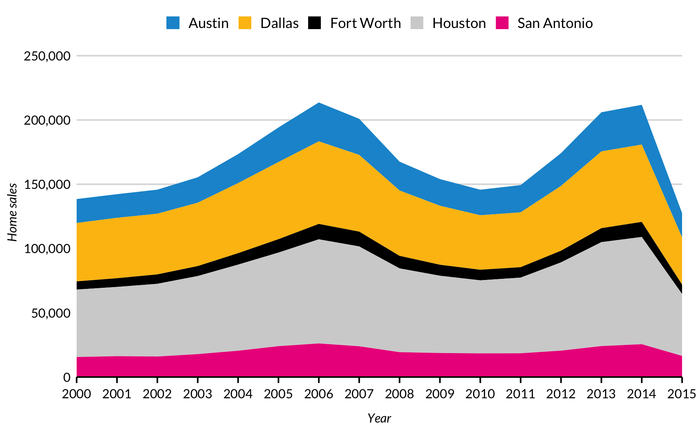
Filled Area
txhousing %>%
filter(city %in% c("Austin", "Houston", "Dallas", "San Antonio", "Fort Worth")) %>%
group_by(city, year) %>%
summarize(listings = sum(listings)) %>%
mutate(listings = ifelse(is.na(listings), lag(listings), listings)) %>%
ggplot(aes(x = year, y = listings, fill = city)) +
geom_area(position = "fill") +
scale_y_continuous(expand = expand_scale(mult = c(0, 0.1)), labels = scales::comma) +
labs(title = "Home Listings in Texas Cities",
x = "Year",
y = "Proportion of Home Listings")
Waffle Chart / Square Pie Chart
The waffle package {CRAN and Github} creates suare pie charts. It can also be combined with glyphs for more elegant shapes than squares. This example uses data pulled from A Vision for an Equitable DC.
Waffle charts will require a little extra tinkering since they are called from library(waffle) instead of library(ggplot2). Most importantly, waffle charts require theme_urban(text = element_text(family = "Lato")) for the Lato font.
Single Waffle Chart
library(waffle)
parts <- c(`Virginia\nClinics` = (1000 - 208 - 105), `Maryland\nClinics` = 208, `D.C.\nClinics` = 105)
waffle(parts, rows = 25, size = 1, colors = c("#1696d2", "#fdbf11", "#000000"), legend_pos = "bottom") +
labs(title = "Free Clinics in the D.C.-Maryland-Virginia Area",
subtitle = "1 Square == 1 Clinic") +
theme(text = element_text(family = "Lato"))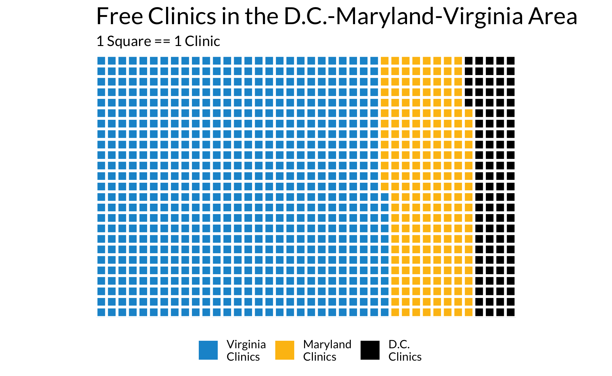
Waffle Charts with Glyphs
Waffle charts can be enhanced by replacing squares qith glyphs. Two important arguments to know are glyph_size = and use_glyph =. Both are called in the waffle() function. Note: size = 1 is sensible and glyph_size = 12 is sensible.
Using glyphs requires downloading fontawesome. That can be done here. Then run library(extrafont), port(<font-location>), and loadfonts() once. After that, building waffle charts with glpyhs should be as easy as one function call.
#library(extrafont)
#font_import("H:/IT/urban_R_theme/docs")
#loadfonts()
parts <- c(`Virginia\nClinics` = (50 - 10 - 5), `Maryland\nClinics` = 10, `D.C.\nClinics` = 5)
waffle(parts, rows = 5, glyph_size = 12, colors = c("#1696d2", "#fdbf11", "#000000"), legend_pos = "bottom", use_glyph = "medkit") +
labs(title = "Free Clinics in the D.C.-Maryland-Virginia Area",
subtitle = "1 Square == 20 Clinics") +
theme(text = element_text(family = "Lato"))Multiple Waffle Charts
library(waffle) allows multiple waffle charts to be ironed together using iron(). Ironing multiple charts together requires some trial-and-error to get the sizes and resolution to look good, but the results can be worth the work. Don’t forget theme(text = element_text(family = "Lato"))!
library(waffle)
white <- c(`With Degree` = 169300, `Without Degree` = 800)
black <- c(`With Degree` = 174900, `Without Degree` = 34700)
hispanic <- c(`With Degree` = 27700, `Without Degree` = 12400)
iron(
waffle(white / 83, rows = 40, size = 0.25, colors = c("#1696d2", "#fdbf11"), title = "White", keep = FALSE, pad = 10) +
theme(text = element_text(family = "Lato")),
waffle(black / 83, rows = 40, size = 0.25, colors = c("#1696d2", "#fdbf11"), title = "Black", keep = FALSE) +
theme(text = element_text(family = "Lato")),
waffle(hispanic / 83, rows = 40, size = 0.25, colors = c("#1696d2", "#fdbf11"), title = "Hispanic", keep = FALSE, pad = 59, xlab = "1 Square == 83 People") +
theme(text = element_text(family = "Lato"))
) 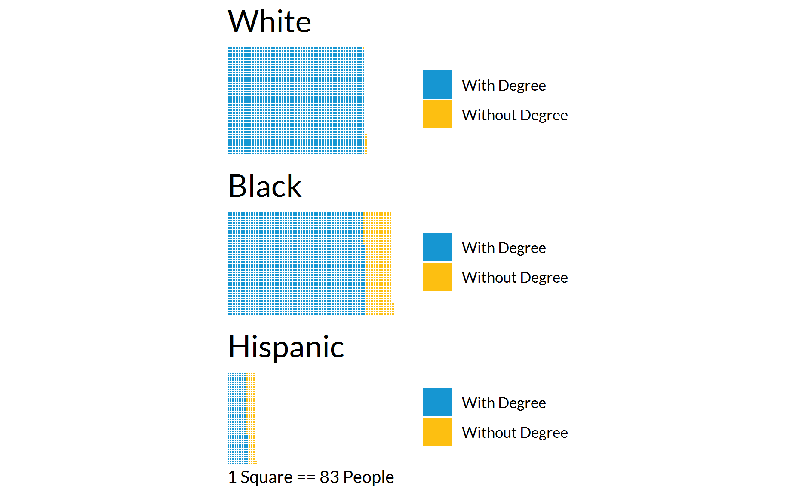
Heat map
library(fivethirtyeight)
bad_drivers %>%
filter(state %in% c("Maine", "New Hampshire", "Vermont", "Massachusetts", "Connecticut", "New York")) %>%
mutate(`Number of\nDrivers` = scale(num_drivers),
`Percent\nSpeeding` = scale(perc_speeding),
`Percent\nAlcohol` = scale(perc_alcohol),
`Percent Not\nDistracted` = scale(perc_not_distracted),
`Percent No\nPrevious` = scale(perc_no_previous),
state = factor(state, levels = rev(state))
) %>%
select(-insurance_premiums, -losses, -(num_drivers:losses)) %>%
gather(`Number of\nDrivers`:`Percent No\nPrevious`, key = "variable", value = "SD's from Mean") %>%
ggplot(aes(variable, state)) +
geom_tile(aes(fill = `SD's from Mean`)) +
labs(title = "Northeast Drivers Involved in Fatal Collisions By Behavior",
subtitle = "As a share of scaled fatal collisions per billion miles, 2009",
x = NULL,
y = NULL) +
scale_fill_gradientn() +
theme(legend.position = "right",
legend.direction = "vertical",
axis.line.x = element_blank(),
panel.grid.major.y = element_blank()) +
remove_ticks()
#https://learnr.wordpress.com/2010/01/26/ggplot2-quick-heatmap-plotting/Faceting and Small Multiples
facet_wrap()
R’s faceting system is a powerful way to make “small multiples”.
Some edits to the theme may be necessary depending upon how many rows and columns are in the plot.
diamonds %>%
ggplot(mapping = aes(x = carat, y = price)) +
geom_point(alpha = 0.05) +
facet_wrap(~cut, ncol = 5) +
scale_y_continuous(expand = expand_scale(mult = c(0, 0.1)),
limits = c(0, NA),
labels = scales::dollar) +
labs(x = "Carat",
y = "Price")
facet_grid()
diamonds %>%
filter(color %in% c("D", "E", "F", "G")) %>%
ggplot(mapping = aes(x = carat, y = price)) +
geom_point(alpha = 0.05) +
facet_grid(color ~ cut) +
scale_y_continuous(expand = expand_scale(mult = c(0, 0.1)),
limits = c(0, NA),
labels = scales::dollar) +
labs(x = "Carat",
y = "Price") +
theme(panel.spacing = unit(20L, "pt"))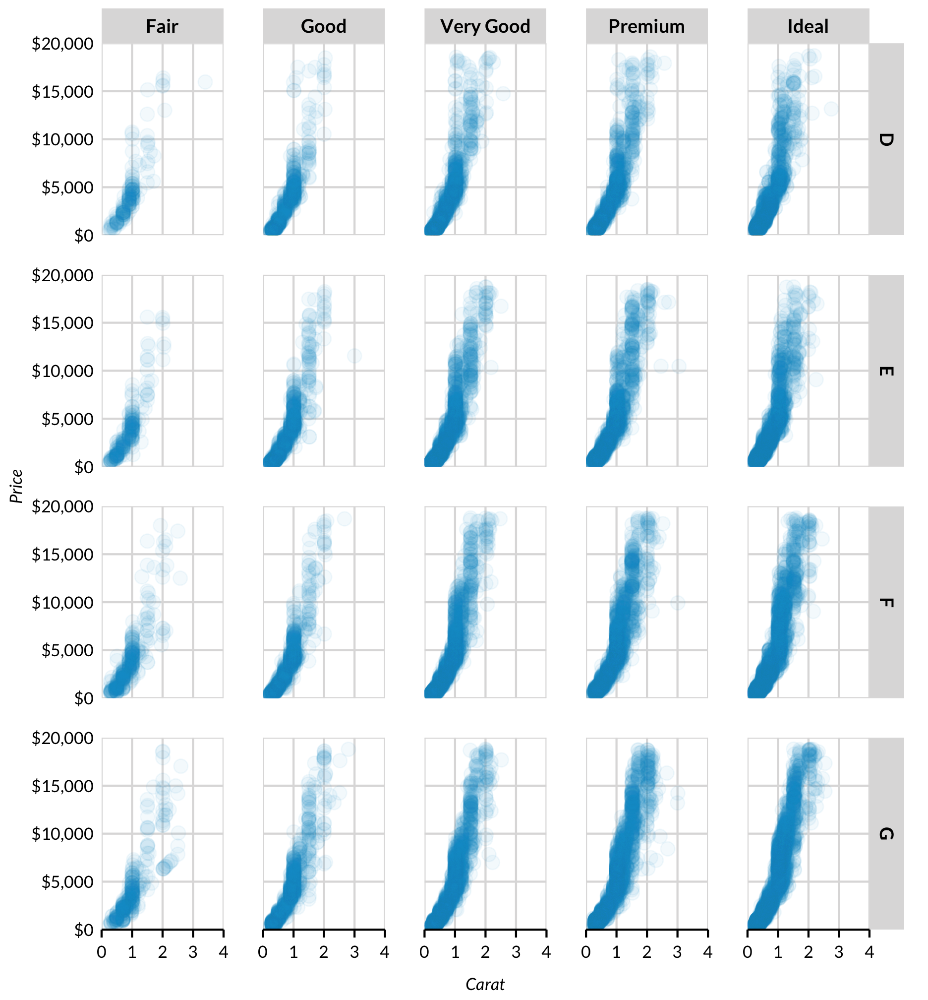
Smoothers
geom_smooth() fits and plots models to data with two or more dimensions.
ggplot(data = mpg) +
geom_smooth(mapping = aes(x = displ, y = hwy))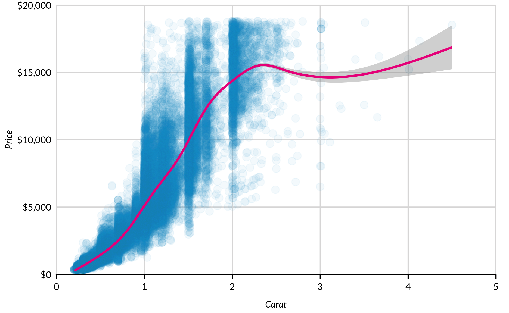
Understanding and manipulating defaults is more important for geom_smooth() than other geoms because it contains a number of assumptions. geom_smooth() automatically uses loess for datasets with fewer than 1,000 observations and a generalized additive model with formula = y ~ s(x, bs = "cs") for datasets with greater than 1,000 observations. Both default to a 95% confidence interval with the confidence interval displayed.
Models are chosen with method = and can be set to lm(), glm(), gam(), loess(), rlm(), and more. Formulas can be specified with formula = and y ~ x syntax. Plotting the standard error is toggled with se = TRUE and se = FALSE, and level is specificed with level =. As always, more information can be seen in RStudio with ?geom_smooth().
geom_point() adds a scatterplot to geom_smooth(). The order of the function calls is important. The function called second will be layed on top of the function called first.
ggplot(data = diamonds, mapping = aes(x = carat, y = price)) +
geom_point(alpha = 0.1) +
geom_smooth(color = "#ec008b") +
scale_y_continuous(expand = c(0, 0), labels = scales::dollar)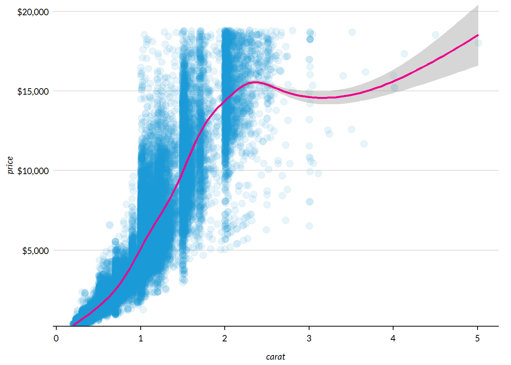
geom_smooth can be subset by categorical and factor variables. This requires subgroups to have a decent number of observations and and a fair amount of variability across the x-axis. Confidence intervals often widen at the ends so special care is needed for the chart to be meaningful and readable.
ggplot(data = mpg, mapping = aes(x = displ, y = hwy, color = factor(cyl))) +
geom_point(alpha = 0.2) +
geom_smooth() +
labs(title = "Engine Displacement and City MPG by Number of Cylinders",
subtitle = "Loess: MPG = Displacement",
x = "Engine Displacement",
y = "Highway MPG")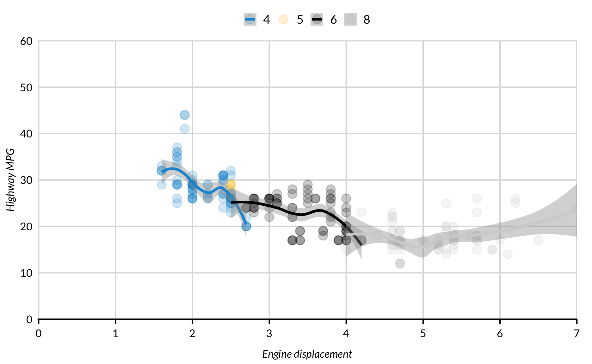
ggplot(data = mpg, mapping = aes(x = displ, y = hwy, color = drv)) +
geom_smooth(method = "lm") +
geom_point(alpha = 0.2) +
labs(title = "Engine Displacement and City MPG by Drive",
subtitle = "Linear Model: MPG = Displacement",
x = "Engine Displacement",
y = "Highway MPG")Highlighting
points polygons lines
Text and Annotation
Several functions can be used to annotate, label, and highlight different parts of plots. geom_text() and geom_text_repel() both display variables from data frames. annotate(), which has several different uses, displays variables and values included in the function call.
geom_text()
geom_text() turns text variables in data sets into geometric objects. This is useful for labeling data in plots. Both functions need x values and y values to determine placement on the coordinate plane, and a text vector of labels.
This can be used to label geom_bar().
diamonds %>%
group_by(cut) %>%
summarize(price = mean(price)) %>%
ggplot(aes(cut, price)) +
geom_bar(stat = "identity") +
geom_text(aes(label = scales::dollar(price)), vjust = -1) +
scale_y_continuous(expand = expand_scale(mult = c(0, 0.2)),
labels = scales::dollar) +
labs(title = "Average Diamond Price by Diamond Cut",
x = "Cut",
y = "Price") +
remove_ticks()
It can also be used to label points in a scatter plot.
It’s rarely useful to label every point in a scatter plot. Use filter() to create a second data set that is subsetted and pass it into the labelling function.
labels <- mtcars %>%
rownames_to_column("model") %>%
filter(model %in% c("Toyota Corolla", "Merc 240D", "Datsun 710"))
mtcars %>%
ggplot(mapping = aes(x = wt, y = mpg)) +
geom_point() +
geom_text(data = labels, mapping = aes(x = wt, y = mpg, label = model), nudge_x = 0.38) +
labs(title = "Fuel Efficiency Declines as Weight Increases",
x = "Weight (Tons)",
y = "Miles Per Gallon")
Text too often overlaps with other text or geoms when using geom_text(). library(ggrepel) is a library(ggplot2) add-on that automatically positions text so it doesn’t overlap with geoms or other text. To add this functionality, install and load library(ggrepel) and then use geom_text_repel() with the same syntax as geom_text().
geom_text_repel()
library(ggrepel)
labels <- mtcars %>%
rownames_to_column("model") %>%
top_n(5, mpg)
mtcars %>%
ggplot(mapping = aes(x = wt, y = mpg)) +
geom_point() +
geom_text_repel(data = labels,
mapping = aes(label = model),
nudge_x = 0.38) +
scale_y_continuous(expand = c(0, 0), limits = c(0, 40)) +
labs(title = "Fuel Efficiency Declines as Weight Increases",
x = "Weight (Tons)",
y = "Miles Per Gallon")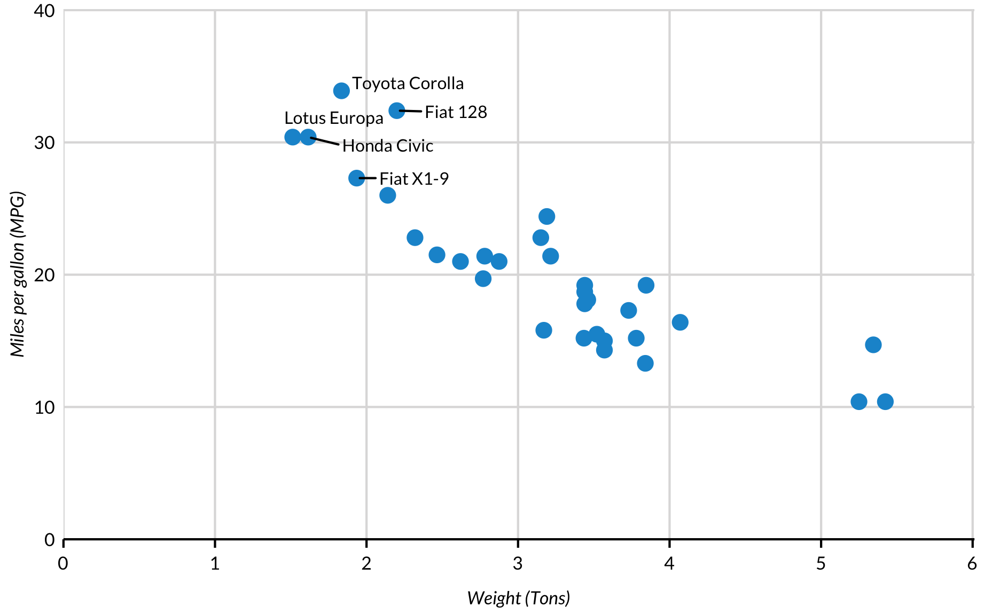
annotate()
annotate() doesn’t use data frames. Instead, it takes values for x = and y =. It can add text, rectangles, segments, and pointrange.
msleep %>%
filter(bodywt < 1000) %>%
ggplot(aes(bodywt, sleep_total)) +
geom_point() +
scale_y_continuous(expand = c(0, 0), limits = c(0, 25)) +
annotate("text", x = 500, y = 12, label = "These data suggest that heavy \n animals sleep less than light animals") +
labs(title = "The relationship between mammal weight and sleep",
x = "Body weight (pounds)",
y = "Sleep time (hours)")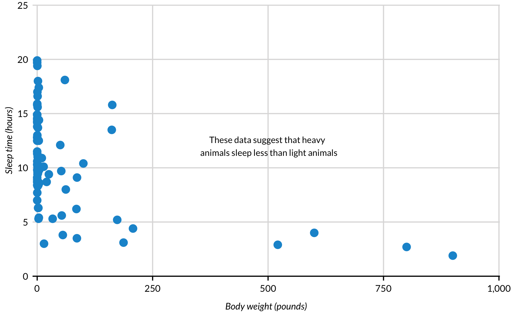
library(AmesHousing)
ames <- make_ames()
ames %>%
mutate(square_footage = Total_Bsmt_SF - Bsmt_Unf_SF + First_Flr_SF + Second_Flr_SF) %>%
mutate(Sale_Price = Sale_Price / 1000) %>%
ggplot(aes(square_footage, Sale_Price)) +
geom_point(alpha = 0.2) +
scale_y_continuous(expand = c(0, 0),
limits = c(0, 800),
labels = scales::dollar) +
scale_x_continuous(labels = scales::comma,
breaks = c(0, 5000, 10000)) +
labs(title = "Home Sales Prices in Ames, Iowa",
x = "Square footage",
y = "Sale price (thousands)") +
annotate("rect", xmin = 6800, xmax = 11500, ymin = 145, ymax = 210, alpha = 0.1) +
annotate("text", x = 8750, y = 230, label = "Unfinished homes")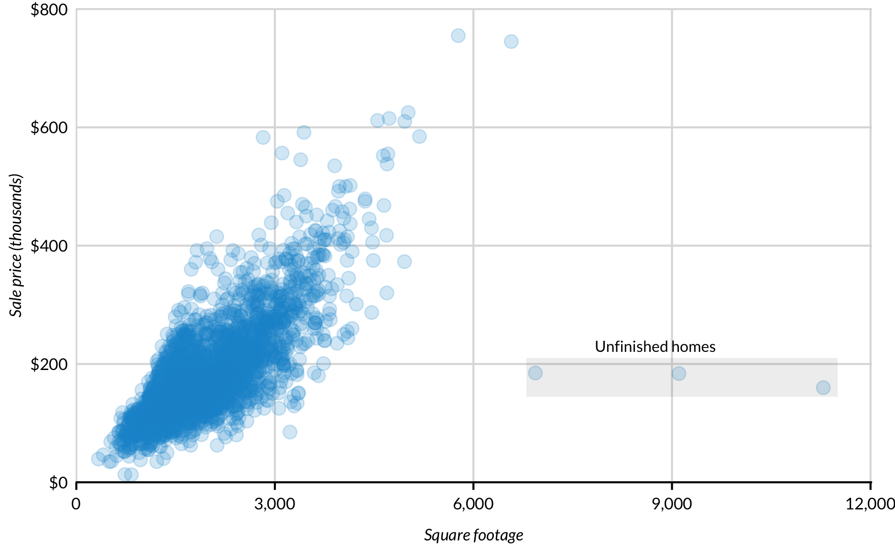
Layered Geoms
Geoms can be layered in ggplot2. This is useful for design and analysis.
It is often useful to add points to line plots with a small number of values across the x-axis. This example from R for Data Science shows how changing the line to grey can be appealing.
Design
Before
table1 %>%
ggplot(aes(x = year, y = cases)) +
geom_line(aes(color = country)) +
geom_point(aes(color = country)) +
scale_y_continuous(expand = expand_scale(mult = c(0, 0.2)), labels = scales::comma) +
scale_x_continuous(breaks = c(1999, 2000)) +
labs(title = "Changes in Tuberculosis Cases in Three Countries")
After
table1 %>%
ggplot(aes(year, cases)) +
geom_line(aes(group = country), color = "grey50") +
geom_point(aes(color = country)) +
scale_y_continuous(expand = expand_scale(mult = c(0, 0.2)), labels = scales::comma) +
scale_x_continuous(breaks = c(1999, 2000)) +
labs(title = "Changes in Tuberculosis Cases in Three Countries")
Layering geoms is also useful for adding trend lines and centroids to scatter plots.
# Simple line
# Regression model
# CentroidsCentroids
mpg_summary <- mpg %>%
group_by(cyl) %>%
summarize(displ = mean(displ), cty = mean(cty))
mpg %>%
ggplot() +
geom_point(aes(x = displ, y = cty, color = factor(cyl)), alpha = 0.5) +
geom_point(data = mpg_summary, aes(x = displ, y = cty), size = 5, color = "#ec008b") +
geom_text(data = mpg_summary, aes(x = displ, y = cty, label = cyl)) +
scale_y_continuous(expand = c(0, 0), limits = c(0, 40)) +
labs(title = "City MPG, Engine Displacement, and Number of Cylinders",
subtitle = "Subgroup Means in Red",
x = "Displacement",
y = "City MPG")
Saving Plots
ggsave() exports ggplot2 plots. The function can be used in two ways. If plot = isn’t specified in the function call, then ggsave() automatically saves the plot that was last displayed in the Viewer window. Second, if plot = is specified, then ggsave() saves the specified plot. ggsave() guesses the type of graphics device to use in export (.png, .pdf, .svg, etc.) from the file extension in the filename.
mtcars %>%
ggplot(aes(x = wt, y = mpg)) +
geom_point()
ggsave(filename = "cars.png")
plot2 <- mtcars %>%
ggplot(aes(x = wt, y = mpg)) +
geom_point()
ggsave(filename = "cars.png", plot = plot2)Exported plots rarely look identical to the plots that show up in the Viewer window in RStudio because the overall size and aspect ratio of the Viewer is often different than the defaults for ggsave(). Specific sizes, aspect ratios, and resolutions can be controlled with arguments in ggsave(). RStudio has a useful cheatsheet called “How Big is Your Graph?” that should help with choosing the best size, aspect ratio, and resolution.
In general, .svg files appear crisper than .png or .pdf files. However, .png and .pdf are more stable in web browsers.
Bibliography and Session Information
Note: Examples present in this document by Aaron Williams were created during personal time.
Bob Rudis and Dave Gandy (2017). waffle: Create Waffle Chart Visualizations in R. R package version 0.7.0. https://CRAN.R-project.org/package=waffle
Chester Ismay and Jennifer Chunn (2017). fivethirtyeight: Data and Code Behind the Stories and Interactives at ‘FiveThirtyEight’. R package version 0.3.0. https://CRAN.R-project.org/package=fivethirtyeight
Hadley Wickham. ggplot2: Elegant Graphics for Data Analysis. Springer-Verlag New York, 2009.
Hadley Wickham (2017). tidyverse: Easily Install and Load the ‘Tidyverse’. R package version 1.2.1. https://CRAN.R-project.org/package=tidyverse
Hadley Wickham (2017). forcats: Tools for Working with Categorical Variables (Factors). R package version 0.2.0. https://CRAN.R-project.org/package=forcats
Jennifer Bryan (2017). gapminder: Data from Gapminder. R package version 0.3.0. https://CRAN.R-project.org/package=gapminder
Kamil Slowikowski (2017). ggrepel: Repulsive Text and Label Geoms for ‘ggplot2’. R package version 0.7.0. https://CRAN.R-project.org/package=ggrepel
Max Kuhn (2017). AmesHousing: The Ames Iowa Housing Data. R package version 0.0.3. https://CRAN.R-project.org/package=AmesHousing
Peter Kampstra (2008). Beanplot: A Boxplot Alternative for Visual Comparison of Distributions, Journal of Statistical Software, 2008. https://www.jstatsoft.org/article/view/v028c01
R Core Team (2017). R: A language and environment for statistical computing. R Foundation for Statistical Computing, Vienna, Austria. URL https://www.R-project.org/.
Winston Chang, (2014). extrafont: Tools for using fonts. R package version 0.17. https://CRAN.R-project.org/package=extrafont
Yihui Xie (2018). knitr: A General-Purpose Package for Dynamic Report Generation in R. R package version 1.19.
sessionInfo()## R version 3.5.0 (2018-04-23)
## Platform: x86_64-apple-darwin15.6.0 (64-bit)
## Running under: macOS High Sierra 10.13.6
##
## Matrix products: default
## BLAS: /Library/Frameworks/R.framework/Versions/3.5/Resources/lib/libRblas.0.dylib
## LAPACK: /Library/Frameworks/R.framework/Versions/3.5/Resources/lib/libRlapack.dylib
##
## locale:
## [1] en_US.UTF-8/en_US.UTF-8/en_US.UTF-8/C/en_US.UTF-8/en_US.UTF-8
##
## attached base packages:
## [1] stats graphics grDevices utils datasets methods base
##
## other attached packages:
## [1] AmesHousing_0.0.3 fivethirtyeight_0.4.0 waffle_0.7.0
## [4] ggridges_0.5.0 ggrepel_0.8.0 gapminder_0.3.0
## [7] hexbin_1.27.2 bindrcpp_0.2.2 urbnthemes_0.0.1
## [10] forcats_0.3.0 stringr_1.3.1 dplyr_0.7.5
## [13] purrr_0.2.5 readr_1.1.1 tidyr_0.8.1
## [16] tibble_1.4.2 ggplot2_3.0.0 tidyverse_1.2.1
## [19] knitr_1.20
##
## loaded via a namespace (and not attached):
## [1] Rcpp_0.12.17 lubridate_1.7.4 lattice_0.20-35
## [4] png_0.1-7 assertthat_0.2.0 rprojroot_1.3-2
## [7] conflicted_0.1.0 digest_0.6.15 psych_1.8.4
## [10] R6_2.2.2 cellranger_1.1.0 plyr_1.8.4
## [13] backports_1.1.2 evaluate_0.10.1 httr_1.3.1
## [16] pillar_1.2.3 rlang_0.2.1 lazyeval_0.2.1
## [19] readxl_1.1.0 rstudioapi_0.7 extrafontdb_1.0
## [22] Matrix_1.2-14 rmarkdown_1.10 labeling_0.3
## [25] extrafont_0.17 foreign_0.8-70 munsell_0.5.0
## [28] broom_0.4.4 compiler_3.5.0 modelr_0.1.2
## [31] pkgconfig_2.0.1 mnormt_1.5-5 mgcv_1.8-24
## [34] htmltools_0.3.6 tidyselect_0.2.4 gridExtra_2.3
## [37] crayon_1.3.4 withr_2.1.2 grid_3.5.0
## [40] nlme_3.1-137 jsonlite_1.5 Rttf2pt1_1.3.6
## [43] gtable_0.2.0 magrittr_1.5 scales_0.5.0
## [46] cli_1.0.0 stringi_1.2.3 reshape2_1.4.3
## [49] xml2_1.2.0 RColorBrewer_1.1-2 tools_3.5.0
## [52] glue_1.2.0 hms_0.4.2 parallel_3.5.0
## [55] yaml_2.1.19 colorspace_1.3-2 rvest_0.3.2
## [58] bindr_0.1.1 haven_1.1.1Wickham, H., & Stryjewski, L. (2011). 40 years of boxplots.↩